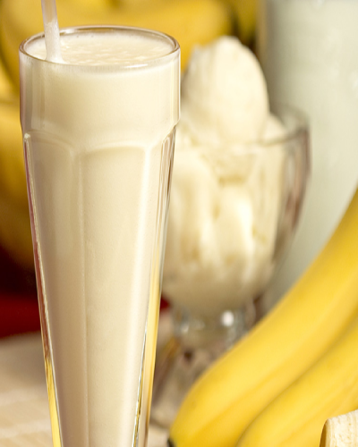

Licuados


Algo rico y fácil de hacer
Los batidos y los licuados son una gran opción, tanto para el desayuno como para la merienda, ya que para ambas instancias alimentarias los que incorporen frutas naturales son saludables. Es importante destacar que no aportan beneficios adicionales a consumir la fruta fresca, pero suelen colaborar en la hidratación matutina si es que aprovechamos para hacerlos con agua segura. Esto resulta importante para afrontar actividades que requieran desgaste cognitivo por la mañana.
Recetas
Licuado de banana y batido multifrutal

- 300cm3 de leche
- 1 unidad de bananas
- 1 cucharata de jugo de limón
- 27 gramos BOOST sin sabor
- 1 porción de hielo picado
- 250cm3 de agua
- 2 cucharadas de leche condensada
- 1/2 de manzana cortada en cubitos
- 1/2 de pera cortada en cubitos
- 1 vaso de jugo de naranja
- 27 gramos BOOST sin sabor
- 1 porción de hielo picado
Ingredientes:
- Licuado de banana:
Licuar todos los ingredientes hasta obtener una consistencia homogénea y espumosa, servir en vaso alto - Batido multifrutal:
Color todos los ingredientes en el vaso de la licuadora, licuar y servir - Tip: Los licuados son una buena forma de sumar frutas a tu alimentación, aportándote además proteínas de buena calidad
- Tip: Otras combinaciones posibles: yogurt y frutos rojos, melón, naranja y banan, frutilla y durazno, maracuyá y damasco
Pasos a seguír:
Smoothie de piña, manzana y menta
- 250 g de piña
- 5 manzanas Granny Smith
- 12 hojas de menta fresca
- 5 cubos de hielo grandes
- Ralladura de una limao
- Zumo de una lima
Ingredientes:
- Comenzaremos rallando y exprimiendo la lima para el vaso alto de una batidora
- De las cinco manzanas pelamos y cortamos en trozos una de ellas, las otras cuatro, que servirán para la presentación, les cortamos la parte superior, como si fuese una tapadera y con un cuchillito le quitamos el centro de esta tapa para después pasar el sorbete.
- Finalmente, junto con la piña, el zumo de la lima y la carne de las manzanas, añadimos las hojas de menta y los cubitos de hielo
- Trituramos con la batidora y su accesorio de cuchilla, rectificamos con agua si nos ha quedado muy espeso, y servimos rápidamente nuestro smoothie dentro de cada manzana.